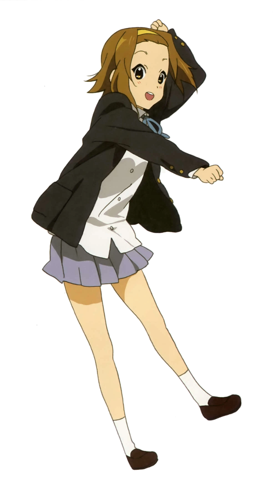
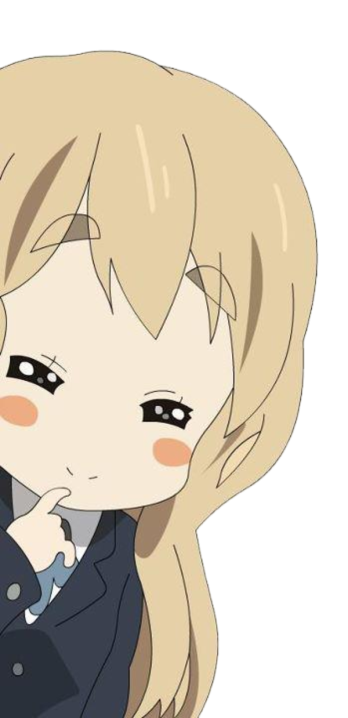
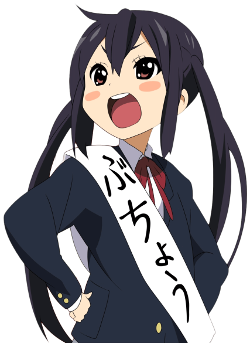
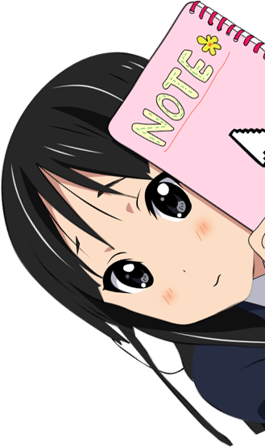

K-ON! — Temporada 1
K-On! Temporada 1 sigue a cuatro chicas de secundaria (Yui, Ritsu, Mio y Mugi) que forman una banda de rock en su club de música ligera, salvándolo de la disolución mientras descubren su amor por la música, la amistad y, sobre todo, ¡el té y los pasteles!, en un ambiente adorable y reconfortante de "slice of life" (recuento de la vida) que se enfoca más en sus interacciones cotidianas que en grandes conciertos.




K-ON! — Temporada 2
K-ON!! (Temporada 2) Las chicas del club de música ligera continúan su vida escolar entre ensayos, nuevos desafíos y momentos cotidianos llenos de humor y ternura. La amistad se fortalece, la música sigue creciendo y cada día trae pequeñas experiencias que hacen de esta temporada un viaje aún más emotivo y divertido.
Shoujo Shuumatsu Ryokou
Girls' Last Tour (Shōjo Shūmatsu Ryokō) es un anime postapocalíptico "slice of life" que sigue a las niñas Chito y Yuri mientras viajan en su Kettenkrad por las ruinas desoladas de la civilización, buscando comida y refugio, encontrando belleza y melancolía en un mundo silencioso donde parecen ser de las últimas humanas, explorando la amistad y la vida en medio de la nada.